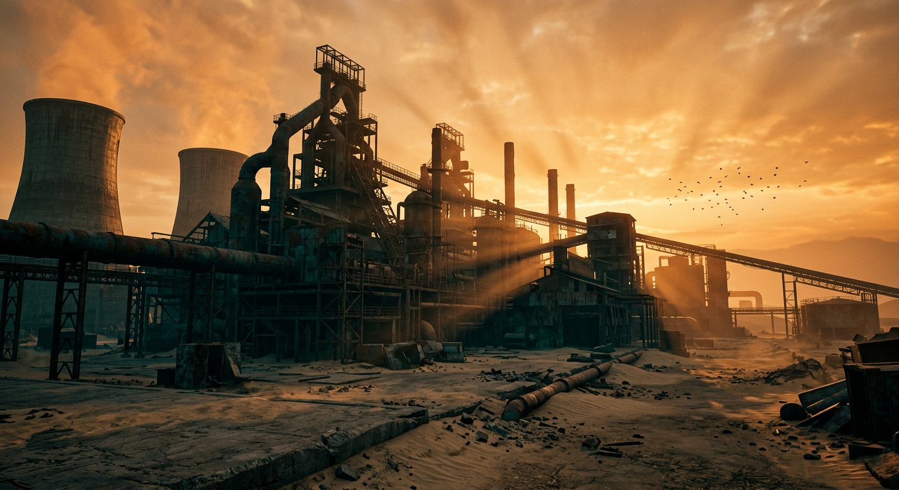

Encyclopédie
Lexique, factions, chronologie des saisons et plateformes. Tout ce qu'il faut pour comprendre le reste du guide.

Lexique
Les termes anglais sont conservés : ce sont ceux que vous verrez en jeu et sur les serveurs vocaux.
22 terme(s) affiché(s).
ADS
Aim Down Sights — viser avec l'optique de l'arme. Le coefficient ADS règle la sensibilité dans ce mode.
Black Site
Base personnelle du mode Operations. Onze stations à améliorer, uniquement en Tekniq Alloys.
CQB / CQC
Close Quarters Battle / Combat — combat rapproché, typiquement en intérieur et en couloir.
Detonation
Mode de jeu compétitif à manches. Attention : beaucoup de changements d'équilibrage lui sont exclusifs.
eDPI
DPI × sensibilité en jeu. L'unité de comparaison réelle entre deux joueurs.
Extraction
Point de sortie d'un raid. Sortir vivant valide tout le butin transporté.
Falloff
Chute de dégâts avec la distance. Exprimée en paliers : par exemple 27 m / 40 m.
Hazard Operations
Mode extraction PvPvE : on entre avec un kit, on pille, on ressort — ou on perd tout.
Havoc Warfare
Mode de combat interarmes 32 contre 32, avec véhicules et objectifs.
Hot drop
Atterrir volontairement dans une zone très disputée pour du loot rapide et du PvP immédiat.
Keycard
Carte d'accès ouvrant une salle verrouillée. 0,05 kg, slot 1×1, nombre d'usages limité.
Loadout
Configuration complète d'une arme ou d'un équipement. Partageable via un code d'import.
Operator / Opérateur
Personnage jouable avec des capacités propres. 19 au total en Saison 12.
Pénétration
Niveau de perforation d'une munition (1 à 6), à comparer au niveau d'armure adverse.
Pick rate
Taux de sélection d'une arme ou d'un opérateur par la communauté. Indicateur de méta.
Safe Box
Conteneur spécial dont le contenu survit à la mort. À réserver aux objets de mission critiques.
Stash
Stockage permanent du joueur. Première station à améliorer au Black Site.
STK / TTK
Shots To Kill / Time To Kill — nombre de balles et temps nécessaires pour mettre à terre.
Tekniq Alloys
Monnaie de jeu principale. Tout le contenu de gameplay s'achète avec.
Third party
Intervenir sur un combat déjà engagé entre deux autres escouades. La stratégie la plus rentable en Hard.
Tier list
Classement de puissance relative. Dans Delta Force, il doit être séparé par mode.
Wipe
Remise à zéro du stash entre saisons. Delta Force n'en pratique pas.
Factions
G.T.I.
Global Tactical Initiative — la force d'intervention jouée par les opérateurs. Structure de commandement du joueur.
Haavk Corporation
Conglomérat militaro-industriel privé. Présent sur toutes les cartes via ses laboratoires, ses gardes d'élite et ses directeurs (Desmoulins, Hudson). À Brakkesh, Haavk veut protéger une livraison de cargo.
Ahsarah Guard
Faction armée locale contrôlant une partie de Brakkesh et de Layali Grove. Son commandant Reis est l'un des huit boss. À Brakkesh, Ahsarah veut reprendre la tour.
Administration de Tide Prison
Corps pénitentiaire du complexe offshore, dirigé par Warden Ghroth, escorté de gardes d'élite et de porteurs de boucliers.
Chronologie
Saison 12 — Aurora ACTUELLE
Martelo, AN-94, Brakkesh 2.0 et son système de factions, Zenith Port et l'événement Riptide, 5 nouvelles munitions, Loading Plans, tier Chroma, Firing Range 2.0, collaboration Phantom Blade Zero.
Saison 11
Carte Warfare The Mog inspirée de Black Hawk Down. Refonte de Layali Grove (Fisher's Hut, Rock Cavern, Underground Dock) et de Space City (Bon Lab, Black Chamber, Test Range). Grand gagnant : la K437.
Mise à jour — Propriété du butin
Le butin des boss appartient désormais au joueur qui porte le coup fatal ou contribue le plus de dégâts.
Contenu — Black Hawk Down
Campagne solo et coopérative à 4 joueurs, gratuite pour tous. Sept chapitres sur la bataille de Mogadiscio (1993).
Plateformes
| Pc | Steam, Epic Games Store, client officiel |
| Console | PlayStation 5, Xbox Series X|S |
| Mobile | iOS et Android (version mobile dédiée) |
| Crossplay | Disponible, avec filtres d'appariement selon la plateforme. |
| Note_S12 | Le Mode Immersif (masquage de l'essentiel de l'interface) est réservé au PC. |
Méthodologie
- Toutes les données proviennent de sources publiques identifiées et datées.
- Les sources sont listées avec leur date de publication et un niveau de confiance
(officiel, élevé, moyen, communautaire) dans le fichier
research/sources_log.jsondu projet. - Quand les sources contredisent une idée reçue, nous suivons les sources et le signalons explicitement.
- Les faits non confirmés portent la mention « À CONFIRMER ».
- Chaque changement d'équilibrage précise son mode d'application (Operations, Warfare ou Detonation).
- Dernière vérification complète : 19 novembre 2026.